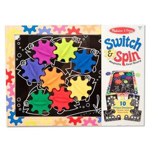
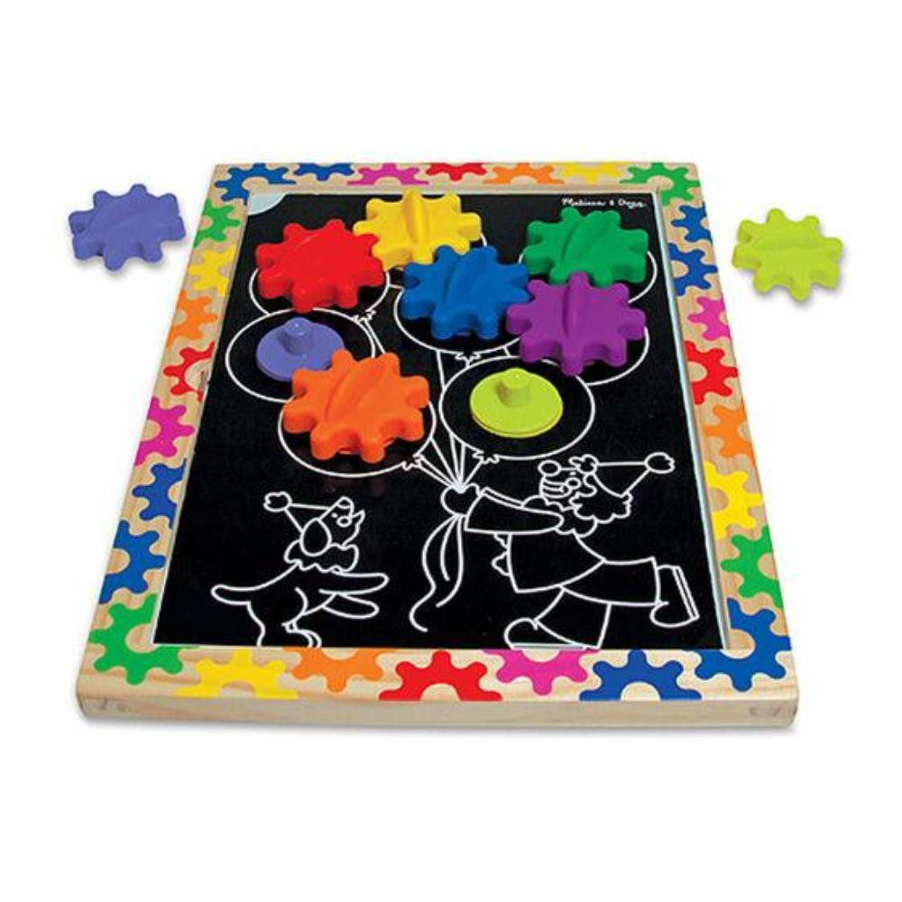
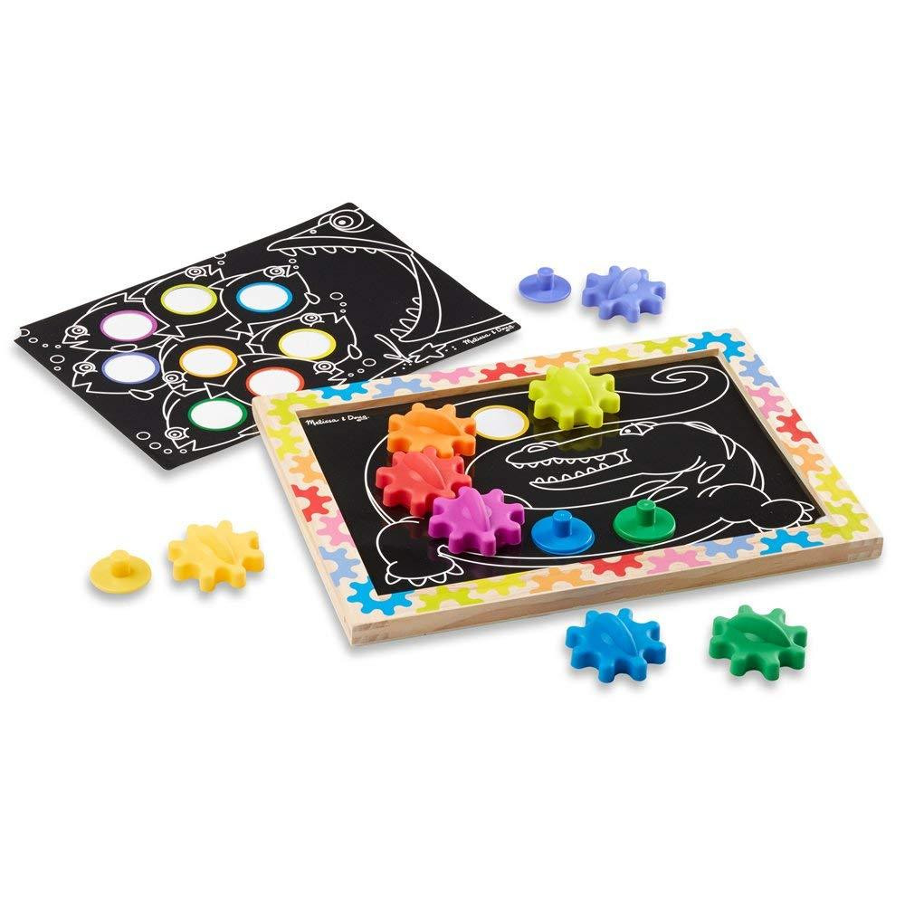
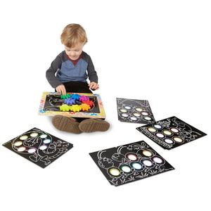

Switch and Spin Magnetic Gear Toy
Magnetic Activities
R330Magnetic board with eight pegs and gears to place, spin and rearrange Includes magnetic board with wooden frame, eight magnetic pegs, eight gears and five double-sided design templates. Design templates feature appealing line-art drawings that come to life when the colorful pegs are placed. Each card features color-coded holes to guide peg placement, plus an easy-lift table for no-hassle design changes. Ideal for developing dexterity, problem solving and an understanding of cause-and-effect and simple mechanics Ages: 2+ years Product: 38.1cm x 27.9cm x 5cm Package: 37.4cm (H) x 27.9cm (W) x 4.4cm (L) Weight: 1kg
Enquire about this product


Switch and Spin Magnetic Gear Toy at Kids Corner KZN
Switch and Spin Magnetic Gear Toy is part of our Magnetic Activities collection. Kids Corner KZN stocks toys for learning, pretend play, creative play, gifting and everyday childhood discovery in South Africa.
Browse more Magnetic Activities toys